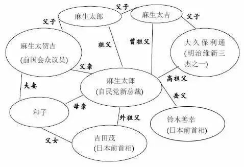
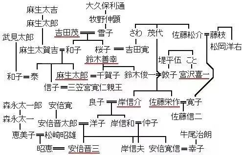
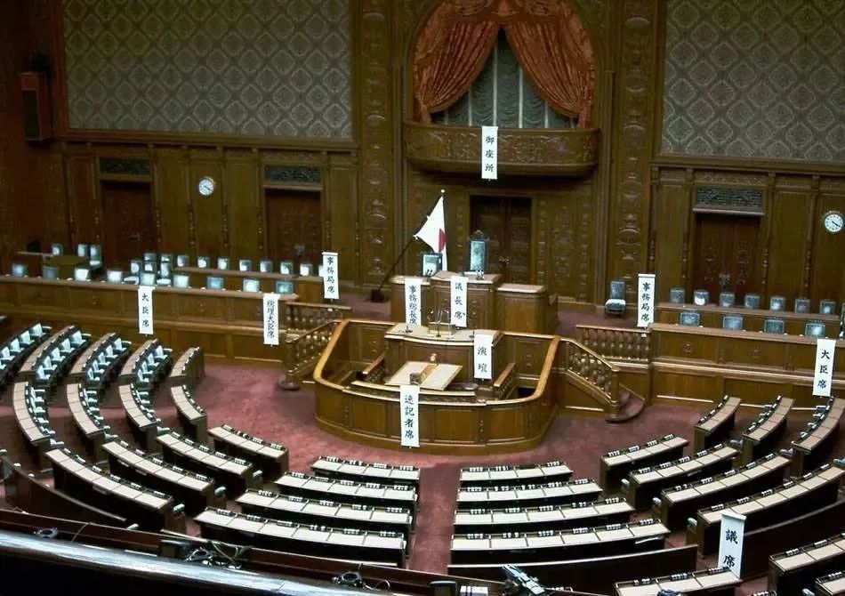

收录于合集

导 读 ****
欧亚系统科学研究会： 去年9月14日，日本内阁官房长官菅义伟以绝对优势击败另外两位候选人，成为接任安倍晋三的自民党新总裁，同时也将成为日本一百年间首位平民出身的首相。然而，新冠大流行和低迷的经济局面使菅义伟的支持率不断走低，今年自民党总裁选举或将不敌党内其他门阀势力推出的挑战者。本文回溯了 “门阀政治”在日本政坛得以存在并维持的成因及历史 。 作者分析，在日本，政治家族和经济家族组成的门阀势力实际上引导着国家的走向。“招牌”“地盘”“钱包”组成的三般定律让门阀牢牢控制选举，阻断了平民从政的可能。“平民”首相本质上无法撼动根深蒂固的派阀政治，菅义伟的当选和未来是否能连任，都与派阀政治运作紧密相关。 本文原载“世界华人周刊”，由“文化纵横”重编，仅代表作者观点，供读者参考。
正文
提起世族门阀，大部分人的下意识反应便是“古代封建”。好像这种落后的制度已不会在现如今和谐民主的土壤上存活，坚守此道的只能是君主制度的土豪中东。
但出人意料的是，我们的邻居、号称最民主国家的日本，在民主政治的皮囊之下，竟然仍旧流动着门阀继承的血液。
不身处其中的我们或许无法想象， 100年间平民出身的日本首相只有1位，民众选举的议员可以世袭三代甚至五代， 这让很多人都大跌眼镜。
更加摧毁我们日常认知的是，“民主”制度下的畸形“世袭”在日本竟然可以得到世俗传统和道德法律的支持。
01
“继承”的民选首相
2017年的11月1日，安倍晋三再次当选，成为日本第98任首相。这位在上一个任期不顾民意反对，强行通过特定安保法案、解禁集体自卫权的首相，民调一路下滑跌之50%以下，甚至在当选仪式上仍有民众在集会抗议。
按理说如此不得民心的领导人早就下台了，可为什么还能连任呢？
冷酷的现实表明： 在日本，民意并不是决定性的政治力量。引导这个国家走向的，是政治家族和经济家族共同组成的门阀势力。 那才是日本真正的主人。
不信我们看安倍晋三的身世，这位在美国留学的高材生回国后第一份工作就是在日本外相（相当于外交部长）身边当秘书。
这并不意味着安倍有多优秀，只因为当时的外相安倍晋太郎是他亲爹。 安倍晋太郎的岳父家出了2位首相，要不是自己在即将出任首相之前病危，安倍家就会有4个人执掌过国家权柄 。
(1982年11月，安倍与时任日本外务大臣的父亲安倍晋太郎在一起)
与安倍家族一样操控当下日本政坛的还有颇有历史沉淀的4个门阀世族 。比如安倍晋三第一任期之后接棒的福田康夫，他71岁出任日本首相，巧合的是福田的父亲当选首相时也是71岁。
还有那位将中日关系打到冰点的小泉纯一郎，他出身于明治维新时期崛起的 小泉家族 。
他们家占据国会席位的历史长达94年，而日本国会也只成立了114年罢了。也就是说， 基本国会在一天，小泉家就能操纵一天权力。
接着就是任期同为一年左右的麻生太郎与鸠山由纪夫。 麻生的祖辈是依靠煤炭发家的麻生太吉 ，有点钱的麻生娶了政治世家吉田茂的女儿，从此形成一股新的政治势力。 鸠山家族 起源于江湖末期的武士，同样发迹于明治维新。

(麻生太郎的外祖父是前首相吉田茂)

(安倍家与麻生太郎家盘根错节的关系，划红线者皆任过首相一职)
这样的关系图谱背后，是让人惊讶的门阀势力。比如17年日本议会大选中， 占据席位最多的自民党中有一半以上的成员是“子继父业”的世袭议员，有些世袭了三代甚至五代。而国会的全部议员中这种身份的也达到了三分之一。
以上的现象不禁引发人们的好奇，日本的“门阀政治”究竟是从怎样的政治土壤中生长出来的呢？
02
民主招牌后的“家天下"
日本的“门阀政治“可以追溯到明治维新时期。 那场并不彻底的政治改革，让已经身居高位的政客们对自己下台之后如何继续保持权势动起了脑筋。
延续千年的封建传统让日本非常重视家族理念。 政客们会早早从家族中挑选出青年才俊作为“预定继承人”，让他们在高层政要身边充当秘书的角色。 这样做可以帮助后者快速积累从政经验和人脉关系。年纪轻轻的安倍之所以能成为外交部长秘书就是得益于这个传统。
同时，为了防止政治继承出现意外，政客们又 通过联姻、过继、认干儿子等各种方式来保持“血统的纯洁性” 。裙带关系之下的日本政治必将逐渐门阀化、固定化。议员席位的世袭成为一种公开并且被广泛接受的做法。 新当选的议员或者首相代表了背后整个家族的施政意图：他们不是一个人，而是代言人。
这样的传统已经为门阀政治提供了优沃的土壤，然而美国的驾到更是助了“一臂之力”。
03
”三般定律“
二战战败之后，美国一边结合自己的利益将日本原有政治生态打乱，一边又想将日本打造成西方民主政治的“示范村”，谁成想弄巧成拙。美国将西方式的民主竞选强塞给日本，貌似给了普通民众公平从政的机会，在实际操作上却远不尽人意。
首先，这些门阀世家会刻意安排家族子弟进入政界历练， 政治事务的耳濡目染可以帮助子弟们熟悉节奏。 当普通青年学生还在看书读报的时候，这些世家子弟已经开始旁观大人物如何在政界中拼杀博弈了，他们一旦正式踏入政界之后可以很快融入日常工作，进而发挥政治才能，贯彻自身的政治理念，打造自己用于参选从政的招牌形象。
另外，日本社会对权威盲从式地崇拜，社会各行各业的权威人士都能够得到极度尊敬和认同， 故而出生于政治世家的候选人利用强者可以吸引选民依赖盲从的心理，比普通候选人更容易得到选票。
其次， 几十年没有改变的选区形成了比较固定的本土特点，这为当地的政治家族长期经营创造了有利条件。 选区如同地盘一样成为私有的政治资源，在固定地区形成别人无法抗衡的势力范围，间接实现操纵选举。当一任家主退休，后继者就自然地交接了这笔无形的政治遗产。
最后，有形的遗产成为他们另一项保障。 日本规定遗产需要按数额缴纳不同比例的巨额遗产税，可用于维持日常运转的政治资金却不在规定范围之内。 这笔令普通人家望尘莫及的巨额财富，给初入政坛的晚辈提供了起飞的机会。
以上涉及的 “招牌”“地盘”“钱包” 三要素相互影响、相互作用，成为闯荡政坛的根基。由于这三个词在日文发音上都以“般”音结尾，所以也被称之为“三般定律”。
实现中日邦交正常化的田中角荣首相被称为“庶民宰相”。因为他平民出身的履历可以最后奋斗成首相是非常罕见的， 因为“三般定律”如同城墙一样将平民的从政可能彻底卡住。
04
”日本株式会社“
美国占领日本之后先是瓦解了支持战争的旧财阀，后来为了冷战需要又扶植起新的垄断性财阀。以 三菱、富士 为代表的经济世家开始全面掌控日本的经济命脉。它们用“经济团体联合会”（下文简称：经团联）的名义进行主导国家走向的活动。
日本政府各项政策的草案都是经团联负责制定 ，为了方便对接，其内部更是设置了各种委员会与政府的各个部门相对应。而且政府负责对政策监督审查的部门都是由经团联派遣的委员组成。
甚至日本政府对外的经济政策，小到各种政经国际会议，大到出国访问，都有经团联的成员参与其中。
有人会想，企业组成的财阀可以如此干预一个国家的政治决策，会不会引发政治人物的反感呢。其实这样的想法是多虑了。 因为经团联与政府是对应互通的 ，官员退出政界之后会到经团联任职，反之离开经团联的人员也会被委派到政府当官。
当经团联与政府融为一体的时候，也就意味着其人员组成只可能是政治世家与经济世家之间的相互流动，不可能给普通平民任何机会。怪不得日本国民纷纷吐槽政府可以改名为“日本株式会社”。

(日本国会议事堂)
“株式会社”在日语里是股份制公司的意思，含义是指企业如同大家庭一般团结。而“日本株式会社”是指政府就是一家财阀控制的股份制公司而已。
05
门阀政治的归宿
当安倍晋三连任首相继续将门阀政治延续的同时，却有77位世袭议员在竞选环节败北，或许这吹响了日本民众对政治世家深恶痛绝的号角。
不可否认，世袭的政客之中从来不缺乏真正的人才，但这些已经世袭三代甚至五代的议员们真的能够继承祖上的荣光吗？
他们生长在东京优裕的环境中，而选区却在地方或农村。底层的生活习性不懂，那么就不理解选民的所思所想，也就无法提出卓有成效的方策为家族地盘的百姓谋取福利。
比如非常出名的纨绔子弟中川昭一，平日毫无建树，视酒为生命，在连续八次出任议员之后最终在选举中失利。安倍晋三在自己第一任期中仅仅当政一年就匆匆辞职，也反映出他完全没有做好承担重任的准备就闭眼往上冲。
门阀政治的独大造成了闭塞保守、暗箱操作等种种弊端，破坏并限制了日本政治的良性发展。 大多数此类议员特别是门阀政治阻碍了非士族出生的优秀人才的选拔，不利于日本政治家素质的整体提高，也扭曲了民主政治中公平参与的原则。
“政治家的儿子长大依然是政治家” 这句话形象地描述了日本政坛“官二代”繁多。这并不代表他们优秀，而是平民被剥夺了逆袭的机会。
这些只顾玩弄政治不管百姓死活的议员已经激起社会普遍不满，门阀政治从根基上开始逐渐瓦解。“千里之堤溃于蚁穴”， 日本平民出身的议员逐渐增多的时候，日本官员的世袭制度必将终结。 我们期待真正能够代表日本人民声音的首相登台，如那位“庶民宰相”田中角荣一般做出真正对日本好，对东亚好，对亚洲、对世界好的事情来。（完）
文章观点不代表本平台观点